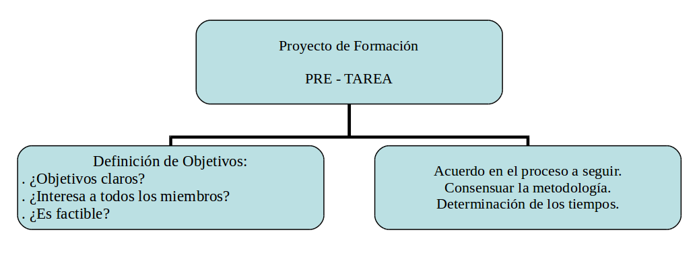
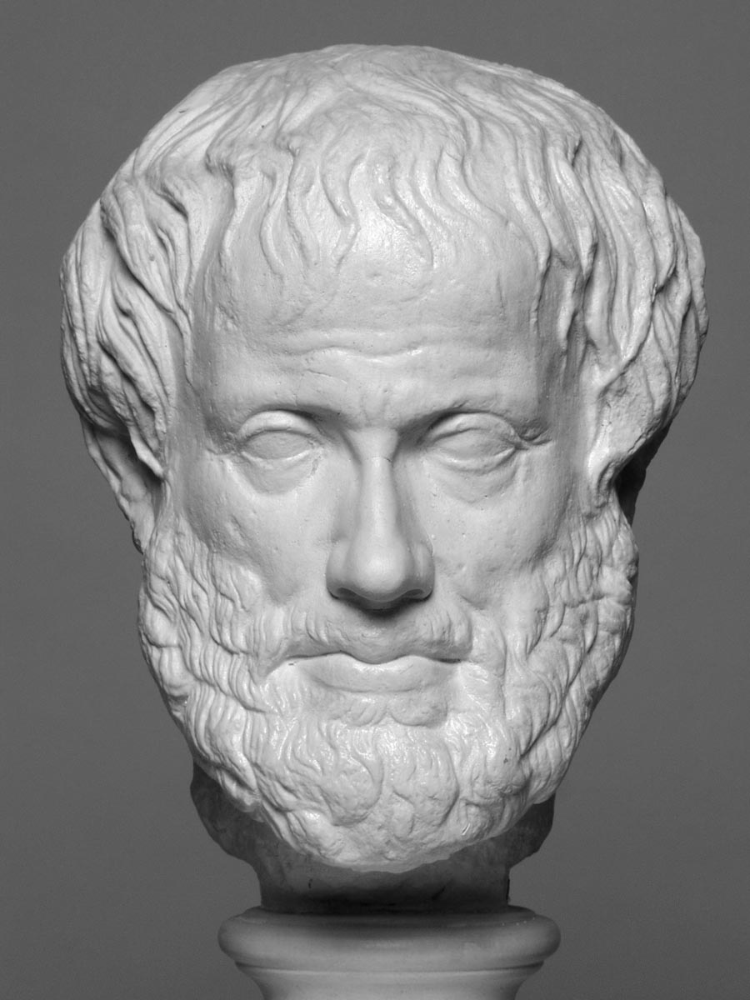

1.1 Mejorar el trabajo en grupo: El grupo y la tarea
Cuando un grupo se enfrenta a una tarea, que en nuestro ámbito puede plantearse como la formación en un campo determinado, se pueden diferenciar una serie de momentos o fases por las que necesariamente atraviesa
- Fase de pre-tarea
- Fase de tarea
- Fase de Implementación
Fase de Pre-Tarea Esta fase busca estrategias que faciliten el avance del grupo y el paso de una perspectiva individual a la grupal. Corremos el riesgo en seguir la propuesta de uno de los miembros y que el conjunto no se identifique con la propuesta o la perciban por encima o por debajo de sus posibilidades (zona de desarrollo próximo).
Esta fase, que no requiere necesariamente demasiado tiempo, garantiza que la propuesta de formación sea meditada y consensuada, con lo que pasa a ser líder del grupo que se ve representada en ella. Como consecuencia se reduce el tiempo para realizar la tarea, además de permitir una autonomía considerable de la autonomía de los integrantes y/o subgrupos al haber dejado muy claro el camino que van a recorrer.
¿Qué incluye esta fase? En la fase de pre-tarea, se produce una aproximación de los puntos de vista. Han de quedar claros los objetivos de la formación o del grupo y como nos vamos a organizar para trabajar. Hemos de centrarnos pues en clarificar los objetivos y el proceso para llevarlos a término.

El grado de claridad en los objetivos influye en la eficacia. En ocasiones los grupos no encuentran dificultades para establecer los objetivos y para especificar las vías de desarrollo; otras veces en cambio este proceso no es fácil. Cuando no está definido de manera precisa, la confusión que genera disminuye la operatividad del grupo.
En ocasiones, iniciamos procesos de formación, con los que si bien manifiestamente todo el mundo está de acuerdo en iniciar, en el fondo los diversos miembros del grupo no lo entienden de la misma manera, hay una confusión en los objetivos pretendidos. Los miembros sin saberlo están pensando en objetivos diferentes.
Los objetivos podrían evaluarse tratando de situarlos en el lugar preciso en relación a una serie de parámetros que plantamos como extremos de un continuo. De esta manera, podríamos tratar de analizar si cumplen o no los siguientes aspectos:
| Aspectos deseables | Aspectos no deseables |
|---|---|
| Definidos con claridad | Definidos de forma imprecisa |
| Compartidos | No compartidos |
| Discutidos y negociados | Impuestos |
| Factibles | Imposibles |
| Vinculados a la práctica | Utópicos |
Caso práctico: Detección de las necesidades y objetivos de formación. Centro de educación infantil y primaria
El equipo de profesores de infantil y primer ciclo de primaria, plantean la demanda de formarse para trabajar con los alumnos el ritmo y la expresión corporal. Al intentar concretar las necesidades que esta formación pretende cubrir y plantear los objetivos, vemos que la demanda responde a la necesidad de disminuir el número de alumnos con dificultades para el aprendizaje de la lectura y la escritura y determinar qué mínimos deben trabajarse en cada uno de los cursos de infantil y primer ciclo de primaria en relación al proceso de aprendizaje de la lectura y la escritura. Esta reflexión, en la que participaron todos los profesores, permitió enfocar la formación hacia los “Procesos de aprendizaje de la lectura y la escritura desde el punto de vista del niño y la construcción del conocimiento” de Emilia Ferreiro y Ana Teberosky.
Además de llegar a acuerdos en los que se definan los objetivos que pretendemos, hemos de acordar las estrategias de abordaje. Una vez consensuado sobre lo que queremos conseguir, en que nos gustaría formarnos, hemos de concretar la manera de conseguirlo. Con respecto a la metodología de trabajo, cabría situarse entre polos como los siguientes:
| Polos | |
|---|---|
| Se toman las decisiones por consenso | Se toman decisiones por computación |
| Se planifica la tarea con rigor y flexibilidad | Se improvisa continuamente |
| Se efectúa el seguimiento de los acuerdos | Se olvida el control |
| Se cumplen los compromisos | Se incumplen |
Fase de Tarea:
Representa el momento en que se relaciona la tarea y la formación. A través de la formación vamos incorporando lo nuevo, que se relaciona con lo que ya se sabe y se hace significativo. Lo nuevo pasa a formar parte del esquema referencial del grupo. Para que esto sea así, es importante que en la fase de pre-tarea se haya reflexionado en grupo y se hayan fijado metas, estrategias y procedimientos comunes. El trabajo en esta fase se puede entender como aquello que debe hacerse para que el grupo alcance los objetivos establecidos.
Cuando uno lleva una formación no importada, sino una que se nutre a partir de la realidad, la gente se apodera del programa, sale del aislamiento, lo hace propio… ¿Cuál es el destino de la importación? Es la capacitación, pero que no se traduce en la práctica. El desarrollo profesional requiere de una actitud de aprendizaje basada en la reflexión sobre la propia práctica y desde el contexto en que ésta se produce. Son muchos los autores que insisten en la importancia de la formación en el lugar de trabajo y la importancia del contexto para el desarrollo profesional.
“Lo que tenemos que aprender lo aprendemos haciendo” Aristóteles

Fase de Implementación: Puesta en marcha. Es evidente que si llevamos a cabo una formación y se adopta, hay que ponerla en marcha y ésta es una fase que se descuida incomprensiblemente. El cambio solo se produce a través de la acción. Si esta actuación se planifica, las posibilidades de introducir una nueva práctica o implementar un nuevo proyecto aumenta. El cambio ha de ser planificado.
No es fácil programar y desarrollar cursos en los que la teoría y la práctica vayan de la mano, sin embargo cuando se trata de formación permanente, y a los efectos de estimular iniciativas y cambios, es necesario hacerlo. Hemos de elaborar proyectos ligados a la práctica como parte esencial de la formación. Asistir a cursos sólo resulta relevante cuando se pone en práctica lo que se ha aprendido, pero esta puesta en acción es muy difícil si no se cuenta con la colaboración de un grupo de compañeros y compañeras en los que apoyarse para cambiar las prácticas y rutinas cotidianas.
La formación debe intentar la transmisión de información nueva, pero también ayudar al equipo de profesores a movilizar su propios recursos, a secuenciar las fases, a elaborar actividades interesantes.
Caso práctico: Formación en Mediación escolar en un centro de secundaria. Un grupo de profesores de un centro de educación secundaria participan en un curso de mediación escolar en el propio instituto. Sin embargo una vez finalizado la parte presencial del curso sobre la mediación, aparecen dificultades a la hora de poner en marcha el proyecto del equipo de mediación en el centro. Fue necesario trabajar las actitudes en relación a la implantación del equipo de mediación y clarificar y concretar de nuevo los distintos aspectos que era necesario abordar para poder así, iniciar el proceso de implantación del equipo de mediación en el IES.
| Es importante que el asesor respete y ayude a identificar la fase de PRETAREA y pensar estrategias que permitan superarla y pasar a la tarea, de modo que el grupo pueda vislumbrar un proyecto de implementación, que es la fase realmente creativa, cuando los cambios han sido incorporados a la práctica. | | --- |